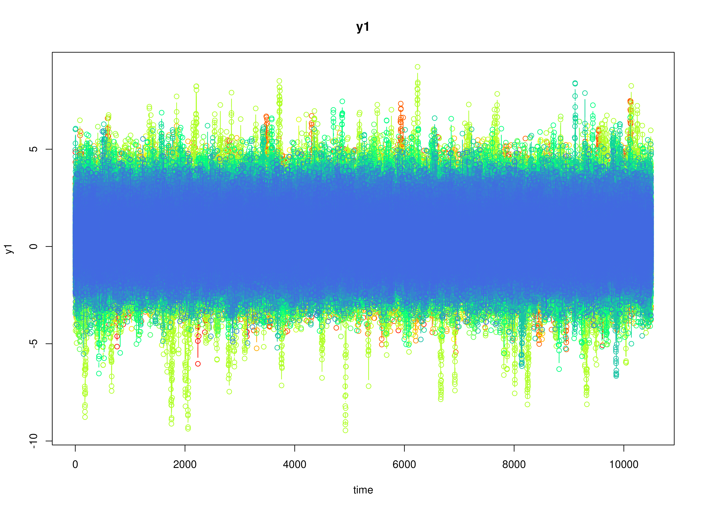
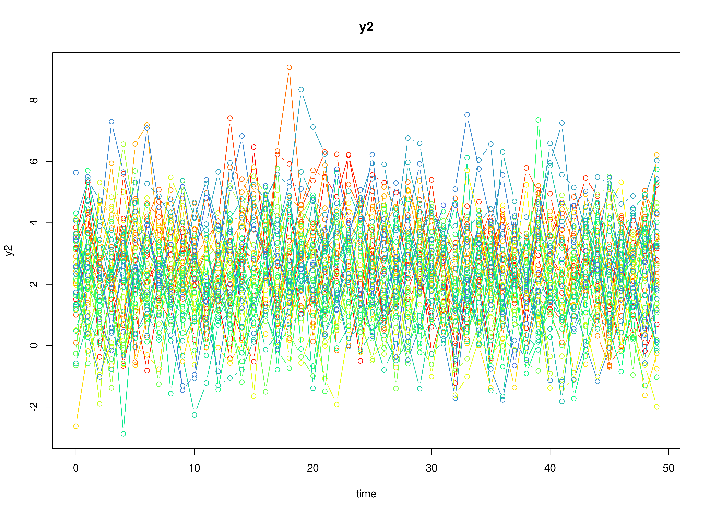

Single Replication from the Simulation Study
Ivan Jacob Agaloos Pesigan
Source:vignettes/sim-rep.Rmd
sim-rep.RmdData Generation
plot(data)

summary(data)
#> id time y1 y2
#> Min. : 1.00 Min. : 0.0 Min. :-5.9822 Min. :-5.6518
#> 1st Qu.: 50.75 1st Qu.:124.8 1st Qu.:-0.2349 1st Qu.:-1.2344
#> Median :100.50 Median :249.5 Median : 0.4984 Median :-0.5300
#> Mean :100.50 Mean :249.5 Mean : 0.5099 Mean :-0.5317
#> 3rd Qu.:150.25 3rd Qu.:374.2 3rd Qu.: 1.2414 3rd Qu.: 0.1703
#> Max. :200.00 Max. :499.0 Max. : 8.2568 Max. : 4.8031MetaVAR
dtvar <- FitDTVAR(data)
summary(dtvar, means = TRUE)
#> Call:
#> fitDTVARMxID::FitDTVARMxID(data = data$data, observed = paste0("y",
#> seq_len(data$k)), id = "id", alpha_fixed = TRUE, alpha_free = NULL,
#> alpha_values = NULL, alpha_lbound = NULL, alpha_ubound = NULL,
#> beta_fixed = FALSE, beta_free = NULL, beta_values = data$beta,
#> beta_lbound = NULL, beta_ubound = NULL, psi_diag = FALSE,
#> psi_d_free = NULL, psi_d_values = NULL, psi_d_lbound = NULL,
#> psi_d_ubound = NULL, psi_l_free = NULL, psi_l_values = NULL,
#> psi_l_lbound = NULL, psi_l_ubound = NULL, nu_fixed = FALSE,
#> nu_free = NULL, nu_values = data$nu, nu_lbound = NULL, nu_ubound = NULL,
#> theta_diag = TRUE, theta_fixed = TRUE, theta_d_free = NULL,
#> theta_d_values = coef(fixed_theta), theta_d_lbound = NULL,
#> theta_d_ubound = NULL, theta_d_equal = FALSE, theta_l_free = NULL,
#> theta_l_values = NULL, theta_l_lbound = NULL, theta_l_ubound = NULL,
#> mu0_fixed = TRUE, mu0_func = FALSE, mu0_free = NULL, mu0_values = data$mu0,
#> mu0_lbound = NULL, mu0_ubound = NULL, sigma0_fixed = TRUE,
#> sigma0_func = FALSE, sigma0_diag = FALSE, sigma0_d_free = NULL,
#> sigma0_d_values = data$sigma0_d_ldl, sigma0_d_lbound = NULL,
#> sigma0_d_ubound = NULL, sigma0_l_free = NULL, sigma0_l_values = data$sigma0_l_ldl,
#> sigma0_l_lbound = NULL, sigma0_l_ubound = NULL, tries_explore = 100,
#> tries_local = 100, max_attempts = 10, grad_tol = 0.01, hess_tol = 1e-08,
#> eps = 1e-06, factor = 10, overwrite = FALSE, path = path,
#> prefix = "FitDTVAR", seed = seed, silent = TRUE, ncores = ncores,
#> clean = TRUE)
#>
#> Means of the estimated paramaters per individual.
#> beta_1_1 beta_2_1 beta_1_2 beta_2_2 nu_1_1 nu_2_1 psi_l_2_1 psi_d_1_1
#> 0.6999 -0.1738 -0.1628 0.6344 0.5111 -0.5307 -0.3606 -1.7635
#> psi_d_2_1
#> -2.4931
metavar <- FitMetaVAR(dtvar)
summary(metavar)
#> Call:
#> metaVAR::MetaVARMx(object = fit$output, x = NULL, alpha_values = fit$data$ma_fixed,
#> random = TRUE, diag = FALSE, effects = TRUE, int_meas = TRUE,
#> int_dyn = FALSE, cov_meas = FALSE, cov_dyn = FALSE, try = 1000,
#> ncores = ncores)
#> est se z p 2.5% 97.5%
#> alpha[1,1] 0.7311 0.0107 68.4550 0.0000 0.7102 0.7520
#> alpha[2,1] -0.1208 0.0112 -10.7845 0.0000 -0.1428 -0.0989
#> alpha[3,1] -0.1399 0.0105 -13.3615 0.0000 -0.1605 -0.1194
#> alpha[4,1] 0.7036 0.0115 61.2194 0.0000 0.6811 0.7262
#> alpha[5,1] 0.5082 0.0247 20.5533 0.0000 0.4597 0.5566
#> alpha[6,1] -0.5319 0.0232 -22.8960 0.0000 -0.5774 -0.4863
#> tau_sqr[1,1] 0.0122 0.0022 5.6274 0.0000 0.0079 0.0164
#> tau_sqr[2,1] 0.0088 0.0017 5.2452 0.0000 0.0055 0.0121
#> tau_sqr[3,1] 0.0016 0.0016 1.0086 0.3132 -0.0015 0.0046
#> tau_sqr[4,1] 0.0050 0.0015 3.4016 0.0007 0.0021 0.0079
#> tau_sqr[5,1] 0.0036 0.0035 1.0333 0.3014 -0.0033 0.0105
#> tau_sqr[6,1] -0.0040 0.0033 -1.2073 0.2273 -0.0105 0.0025
#> tau_sqr[2,2] 0.0138 0.0024 5.7543 0.0000 0.0091 0.0185
#> tau_sqr[3,2] -0.0007 0.0013 -0.5593 0.5760 -0.0034 0.0019
#> tau_sqr[4,2] 0.0048 0.0019 2.5566 0.0106 0.0011 0.0085
#> tau_sqr[5,2] 0.0017 0.0035 0.4934 0.6217 -0.0052 0.0087
#> tau_sqr[6,2] -0.0084 0.0035 -2.4172 0.0156 -0.0153 -0.0016
#> tau_sqr[3,3] 0.0102 0.0018 5.6867 0.0000 0.0067 0.0137
#> tau_sqr[4,3] 0.0061 0.0014 4.2358 0.0000 0.0033 0.0089
#> tau_sqr[5,3] -0.0055 0.0034 -1.5990 0.1098 -0.0122 0.0012
#> tau_sqr[6,3] -0.0002 0.0032 -0.0560 0.9554 -0.0064 0.0060
#> tau_sqr[4,4] 0.0128 0.0025 5.1929 0.0000 0.0080 0.0177
#> tau_sqr[5,4] -0.0009 0.0036 -0.2463 0.8054 -0.0079 0.0061
#> tau_sqr[6,4] -0.0064 0.0035 -1.8134 0.0698 -0.0133 0.0005
#> tau_sqr[5,5] 0.1048 0.0122 8.5963 0.0000 0.0809 0.1287
#> tau_sqr[6,5] -0.0385 0.0087 -4.4017 0.0000 -0.0556 -0.0214
#> tau_sqr[6,6] 0.0948 0.0107 8.8456 0.0000 0.0738 0.1158
#> i_sqr[1,1] 0.8595 0.0215 40.0605 0.0000 0.8175 0.9016
#> i_sqr[2,1] 0.9004 0.0154 58.3596 0.0000 0.8701 0.9306
#> i_sqr[3,1] 0.9197 0.0097 94.5627 0.0000 0.9006 0.9388
#> i_sqr[4,1] 0.9287 0.0087 106.3393 0.0000 0.9116 0.9459
#> i_sqr[5,1] 0.9448 0.0061 155.7457 0.0000 0.9329 0.9567
#> i_sqr[6,1] 0.9655 0.0036 271.4362 0.0000 0.9586 0.9725MLVAR
mlvar <- FitMLVAR(data)
summary(mlvar)
#>
#> mlVAR estimation completed. Input was:
#> - Variables: y1 y2
#> - Lags: 1
#> - Estimator: lmer
#> - Temporal: correlated
#>
#> Information indices:
#> var aic bic
#> y1 242373.8 242478.4
#> y2 250819.8 250924.4
#>
#>
#> Temporal effects:
#> from to lag fixed SE P ran_SD
#> y1 y1 1 0.3597 0.0107 0 0.1452
#> y1 y2 1 -0.1743 0.0077 0 0.0994
#> y2 y1 1 -0.1605 0.0048 0 0.0544
#> y2 y2 1 0.3098 0.0087 0 0.1152
#>
#>
#> Contemporaneous effects (posthoc estimated):
#> v1 v2 P 1->2 P 1<-2 pcor ran_SD_pcor cor ran_SD_cor
#> y2 y1 0 0 -0.1556 0.0336 -0.1556 0.0336
#>
#>
#> Between-subject effects:
#> v1 v2 P 1->2 P 1<-2 pcor cor
#> y2 y1 0 0 -0.4199 -0.4199Mplus
mplus <- FitMplus(data)
summary(mplus)
#> est se R 2.5% 97.5%
#> theta[1,1] 0.5048 0.0056 480000 0.4928 0.5146
#> theta[2,2] 0.5034 0.0054 480000 0.4924 0.5135
#> psi[1,1] 0.1974 0.0059 480000 0.1883 0.2108
#> psi[2,1] -0.0542 0.0023 480000 -0.0586 -0.0498
#> psi[2,2] 0.1756 0.0053 480000 0.1660 0.1868
#> mean(nu[1,1]) 0.5028 0.0241 480000 0.4556 0.5503
#> mean(nu[2,1]) -0.5303 0.0230 480000 -0.5755 -0.4852
#> mean(beta[1,1]) 0.6795 0.0131 480000 0.6502 0.7008
#> mean(beta[2,1]) -0.1563 0.0118 480000 -0.1793 -0.1332
#> mean(beta[1,2]) -0.1758 0.0104 480000 -0.1960 -0.1567
#> mean(beta[2,2]) 0.6468 0.0124 480000 0.6216 0.6700
#> cov(nu[1,1],nu[1,1]) 0.0955 0.0116 480000 0.0758 0.1213
#> cov(nu[2,1],nu[1,1]) -0.0350 0.0085 480000 -0.0533 -0.0200
#> cov(nu[2,1],nu[2,1]) 0.0895 0.0105 480000 0.0717 0.1128
#> cov(nu[1,1],beta[1,1]) 0.0054 0.0032 480000 -0.0006 0.0119
#> cov(nu[2,1],beta[1,1]) -0.0028 0.0032 480000 -0.0091 0.0034
#> cov(beta[1,1],beta[1,1]) 0.0125 0.0020 480000 0.0097 0.0176
#> cov(nu[1,1],beta[2,1]) 0.0025 0.0033 480000 -0.0037 0.0092
#> cov(nu[2,1],beta[2,1]) -0.0072 0.0032 480000 -0.0137 -0.0012
#> cov(beta[2,1], beta[1,1]) 0.0099 0.0014 480000 0.0075 0.0131
#> cov(beta[2,1],beta[2,1]) 0.0128 0.0019 480000 0.0097 0.0169
#> cov(nu[1,1],beta[1,2]) -0.0025 0.0026 480000 -0.0080 0.0020
#> cov(nu[2,1],beta[1,2]) 0.0021 0.0030 480000 -0.0035 0.0077
#> cov(beta[1,2],beta[1,1]) -0.0032 0.0009 480000 -0.0049 -0.0014
#> cov(beta[1,2],beta[2,1]) -0.0005 0.0010 480000 -0.0024 0.0014
#> cov(beta[1,2],beta[1,2]) 0.0052 0.0009 480000 0.0036 0.0071
#> cov(nu[1,1],beta[2,2]) -0.0014 0.0031 480000 -0.0075 0.0046
#> cov(nu[2,1],beta[2,2]) -0.0034 0.0031 480000 -0.0095 0.0025
#> cov(beta[2,2],beta[1,1]) 0.0002 0.0012 480000 -0.0023 0.0025
#> cov(beta[2,2],beta[2,1]) 0.0003 0.0012 480000 -0.0018 0.0028
#> cov(beta[2,2],beta[1,2]) 0.0055 0.0009 480000 0.0039 0.0076
#> cov(beta[2,2],beta[2,2]) 0.0109 0.0016 480000 0.0082 0.0146